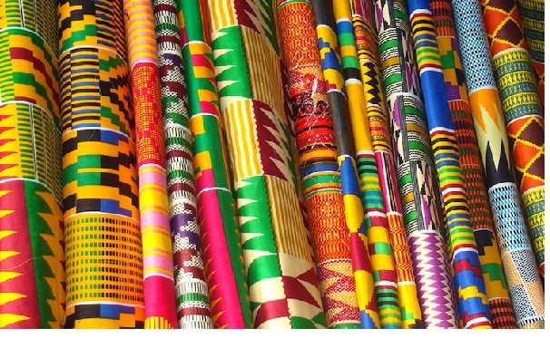

Discover more about us
Our Conference Hall
Our beautiful one thousand sitting Capacity Hall where our maeetings and other event due take place were great mine meet to discuss the progress of our members
Aso Rock
Aso Rock is a large outcrop of granitic rock located on the outskirts of Abuja, the capital of Nigeria. The Aso Rock is a 400-metre (1,300 ft) prominent monoilth with a peak height of 936-metre (3,071 ft) above sea level, it is one of the city's most noticeable features, and that is the location of our Conference Hall
Protect our Cultural Heritage
Together, we can protect our Cultural Heritage,by preserving our beautiful local fabric for our posterity